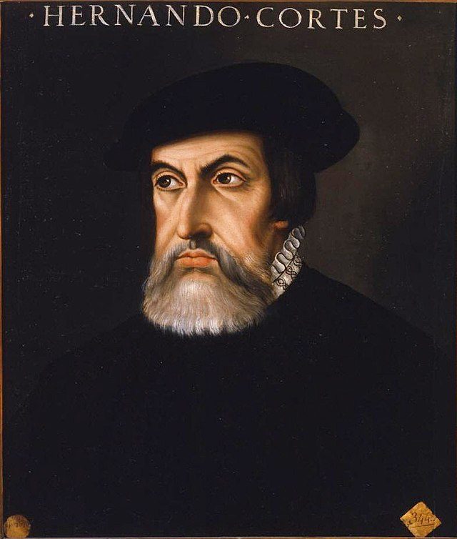
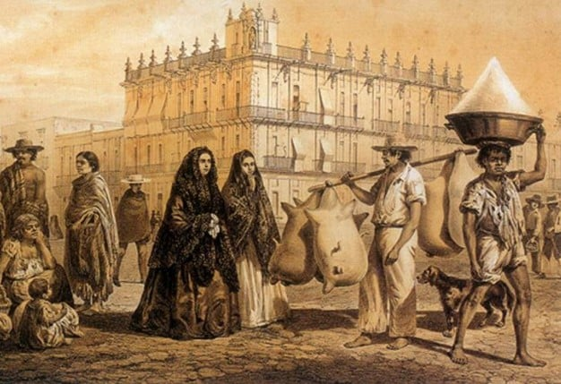
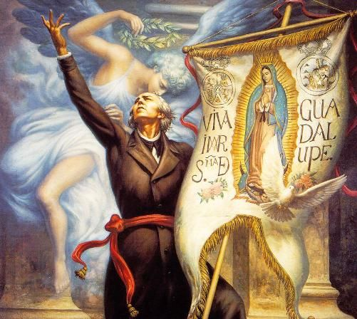

Early History
Mexico City is located in a valley that was inhabited by several indigenous groups from 100 to 900 A.D.
Tenochtitlán was founded in 1325 A.D. by the Mexicas.

Middle History
Skilled warriors, the Aztecs dominated all of Mesoamerica during this era.
When Spanish explorer Hernán Cortés arrived in 1519, it marked a significant change in the city's history.
Colonial Period
During the colonial period (1535-1821), Mexico City was one of the most important cities in the Americas.
The struggle for recognition and favor among the various classes drew attention to the country’s political corruption and helped spark the independence movement.
Independence
The catalyst for Mexico’s independence was a Catholic priest named Miguel Hidalgo y Costilla.
In 1821, the last Viceroy of New Spain signed the Plan of Iguala, which granted Mexico independence.
